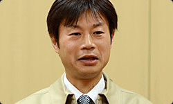
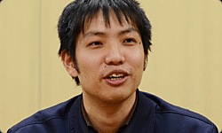
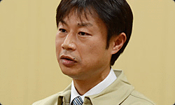

| 零～紫之日記 心靈照相機 任天堂社長訪談第一部份 |
| 牧野格三 企劃開發本部 企劃開發部 伊豆野敏晴 企劃開發本部 企劃開發部 菊地啟介 股份公司光榮特庫摩 制作人 |
|||
| 1. 最恐怖的是想像力 | |||
| 岩田： | 今天是要訪談關係到任天堂 3DS 軟件『心靈照相機～被附身的筆記本～』的各位。請多關照。 | ||
| 全體： | 請多關照。 | ||
| 岩田： | 首先，請先做個自我介紹吧。 | ||
| 菊地： | 我是光榮特庫摩的菊地。 作為『心靈照相機～被附身的筆記本～』的制作人，決定開發概念的作成和各要素的方針，還有進行項目的管理。 |
||
| 伊豆野： | 我是企劃開發部的伊豆野。 作為任天堂方面的制作人，進行了上商品概念和內容的提案。 我和菊地先生從 Wii 的『零～月蝕的假面』*1 確立了企劃時開始，就一起工作了。  *1『零～月蝕的假面』是 Wii 用的軟件，在 2008 年 7 月發售。另外還是在特庫摩開發的恐怖遊戲系列『零』的第四作，作為「光榮特庫摩和任天堂共同項目」的第一款作品。 |
||
| 牧野： | 我是牧野，同樣是企劃開發部的人。 負責任天堂一方的現場監督的工作，和菊地先生一起寫出構思，或把細節部分交給光榮特庫摩的人，還有我也負責「AR 筆記本」的實際制作。*2  *2「AR 筆記本」是和『心靈照相機～被附身的筆記本～』同捆在一起的筆記本。在遊戲中要利用到任天堂 3DS 的照相機來使用在操作中。 |
||
| 伊豆野： | 順便說一下，牧野先生和菊地先生很以外的有緣分呢。 | ||
| 岩田： | 哎？怎麼說？ | ||
| 牧野： | 我的父親，是菊地先生在學生時代的班主任。 | ||
| 岩田： | 哎！？( 笑 ) | ||
| 菊地： | 確實是我在高中 2 年級時的恩師，教我數學。 我也受到那個影響進入了數學系，之後就任了現在的工作。 聽到時真的很吃驚。 |
||
| 岩田： | 那就是緣分嗎，是被“某種附體的什麼”所引導嗎 ( 笑 )。 | ||
| 全體： | ( 笑 ) | ||
| 岩田： | 那麼，首先菊地先生，這次的『心靈照相機～被附身的筆記本～』是迄今為止菊地先生親手制作過的『零』系列延續下來的恐怖遊戲吧。 | ||
| 菊地： | 是那樣啊。我開始制作『零』時已經過了 10 年以上的時間了，從 2001 年 12 月發售開始，到這個月正好是 10 周年。 | ||
| 岩田： | 『零』也已經有 10 年了嗎。遊戲的世界銘刻的 10 周年 20 周年的時間一直在增加啊。當時，『零』的第一部作品是用什麼樣的考慮來制作的？ | ||
| 菊地： | 我們當時是總之是以所謂的“能進行最恐怖體驗的遊戲”為出發點進行的企劃，做出企劃後，就反復的考慮最恐怖的是什麼呢？最後得到了所謂的“人在頭腦中想像的事物是最恐怖的”這個結論。 | ||
| 岩田： | 這就是所謂的最恐怖的實在頭腦中吧。 | ||
| 菊地： | 是啊。我感覺比起把怪異的影像或表現的東西讓人看到，不如立刻感覺一個人在衛生間或浴室裡的那種想像中的世界更恐怖。 | ||
| 岩田： | 不是看到了什麼而恐怖，而是思考著這之後會不會出現什麼的想像更恐怖吧。 | ||
| 菊地： | 是，所以，雖然很多普通的遊戲或影像要添加各種各樣的信息來構成畫面，但『零』可能要減去那些，要從完成的畫面或聲音中敢於減去信息，采用讓玩家會把不足的部分靠自然的想像進行補完這樣的手段。 | ||
| 岩田： | 這就是難以看到，難以聽到，在玩家的頭腦中下意識的補充著吧。 | ||
| 菊地： | 所謂『零』的恐怖，在遊戲內的表現是一半，在玩家頭腦中想像的是另一半，兩者的結合就是完整的恐怖。如果那樣考慮，大概就是「廣義上的 AR ( 擴張現實 )」了吧。*3 *3。AR 是 Augmented Reality ( 擴張現實 ) 縮寫。是把假想的信息重合在現實的影像中的技術。 |
||
| 岩田： | 這次的『心靈照相機』，雖然 AR 是直接形的主要特殊視覺效果，但在使用了『零』的主題之前，就一直很清楚要搭配著廣意的 AR 了。 | ||
| 菊地： | 是那樣想的。在 AR 的意義中，雖然有著擴張現實的技術產物和擴張現實“感”的兩個意思，但在兩者中是後者的意思。有一種積累起技術竅門的感覺。 | ||
| 岩田： | 那種意義，在前作的『月蝕的假面』中使用 Wii 的遙控器的操作干，確實有很多 AR 的臨場感。 | ||
| 菊地： | 雖然是在探索新的恐怖度中得到的手法，但和 Wii 的搭配都非常好。 | ||
| 岩田： | 菊地先生在『零』的十年歷史中，一直重點制作的是什麼呢？ | ||
| 菊地： | 那個意圖，是通過這個系列，盡量“刺激玩家的想像力”。在屏風的背面或在壁櫃中，難道有什麼存在嗎？如果打開會發生什麼之類的。如果是普通的遊戲，如果按下按鍵雖然應該會發生恐怖的事，但這個遊戲是那裡寧可沒發生事的那種恐怖。 | ||
| 岩田： | 明明說著「要出來了要出來了…」，但這裡卻什麼都沒有。大概是這樣…？這樣的情況中，會感覺恐怖度越發的增加了。 |
||
| 菊地： | 是啊。特別是第一作，利用了日本房屋的建築構造，精心制作出所謂的“什麼都沒有的地方存在的恐怖”。還有，在第 2 作以後，設定出了以那些為基礎的恐怖感理念。第 2 作是把悲劇的故事中幻想的恐怖感作為主題。第 3 作的『零～刺青之聲』中 *4，由於采用能來回穿行日常的世界和夢的世界的那種結構，是一種描繪出“日常中侵蝕的恐怖”，這次的『心靈照相機』的「AR 故事」模式，可能和這個構造稍微接近些。 *4『零～刺青之聲』= 2005 年 7 月，由特庫摩發售的『零』系列第 3 作。 |
||
| 岩田： | 順便說一句… 『零』系列中必定會有可愛的女孩出場啊。 |
||
| 菊地： | 是啊 ( 笑 )。 | ||
| 岩田： | 在那方面是處於什麼樣的構思？ | ||
| 菊地： | 好，也說說那些吧 ( 笑 )。 明明玩家大多是男性，為什麼主人公是女性呢 ( 笑 )。一開始的機緣是在第一作中，在考慮怎樣作才會是最恐怖的遊戲時，玩家看到膽怯的女性主人公，感覺會在恐怖度上得到很好的共感。還有，不用頑強的男性和敵人戰鬥，物理上無力的女性把照相機作為武器對抗敵人也和遊戲的設計一致。所以決定采用臉部漂亮又有膽怯的表情，還似乎有靈感的年輕女性作為系列的主人公。 |
||
| 岩田： | 啊，果然可愛的女孩是『零』的隱藏關鍵詞啊 ( 笑 ) | ||
| 全體： | ( 笑 ) | ||
| 菊地： | 事實就是那樣啊。 擁有無暇的心，有些柔弱的美感。 在古今東西的恐怖故事中，那樣的女孩很多都被刻畫為可以把靈呼喚來的人，我想這些都是證明。 |
||
| 岩田： | 確實是那樣啊。 實際在以前，在著手制作『零～月蝕的假面～』的宣傳藝術插圖的工作人員那聽說過，說「在制作包裝插圖時，會對光榮特庫摩的女性角色非常的用心」。 |
||
| 菊地： | 真的是那樣嗎 ( 笑 )。 | ||
| 岩田： | 迄今為止沒有這方面的經驗，但細節都做的非常徹底，這樣應該有非常強的用心制作，可以說那是非常值得學習的。 | ||
| 菊地： | 那個大概就是公司風格。 把角色很用心制作的文化被貫徹到底了吧。 表情上或是對光的位置，如何制作才讓人看著更有魅力，雖然我進入公司 18 年了，但那些都是我一貫傾注心力的點。 |
||
| 岩田： | 伊豆野先生，你和培育出那種文化的菊地先生一起進行工作中，沒有充分的感受到那些嗎？ | ||
| 伊豆野： | 當然有啊，很震驚 ( 笑 )。 制作『月蝕的假面』時的討論會中，雖然說了「這樣已經很好了啊」就回去了，但只要下一次來，就會把那些完全的改變！那種情況已經有很多回了。 |
||
| 岩田： | 啊哈哈哈（笑）。 伊豆野先生直到現在還在和卡默洛特公司 *5 還有阿爾琺夢想公司 *6 還有最近的平凡社 *7 的人一起開發，但光榮特庫摩是最突出的，有著獨特的個性和作家性啊。 *5 卡默洛特股份公司。東京都新宿區的遊戲開發公司。1994 年成立，開發制作了很多任天堂發賣的遊戲『瑪利奧高爾夫』『瑪利奧網球』『黃金的太陽』系列等作品。 *6 阿爾琺夢想股份公司。東京都涉谷區的遊戲軟件開發公司。2000 年成立。代表作是任天堂 DS 上的動作 RPG『瑪利奧和路易斯 RPG』系列，現在開發到了『*3』。 *7 平凡社股份公司。總公司設立在東京都文京區的日本出版公司。參加了 2011 年 9 月發售的任天堂 3DS 軟件『花和生物的立體圖鑒』，提供了照片和解說。請參照社長訪談的『花和生物的立體圖鑒』。 |
||
| 伊豆野： | 確實是那麼想的。 光榮特庫摩的人員確實是這樣對角色非常用心，確實感覺這關係到抓住粉絲的心。  |
||
| 菊地： | 角色或動畫還有背景制作出後，那樣雖然希望按照操作活動，但在遊戲中並不是只有那些，我想要在某處的配合時機中有一種灌入靈魂或聲明的瞬間。 『零』的遊戲中，角色醞釀出的氣氛或聲音和表演等，因為要強調為作為中心，可能會有那種風格的感覺。 |
||
| 岩田： | 那一定是光榮特庫摩風格的“灌入生命的方式”吧。 | ||
| |||
|
- http://www.nintendo.co.jp/3ds/interview/alcj/vol1/index.html - http://bbs.a9vg.com/thread-2113818-1-1.html |
|||
|
|||

| － 1 / 4 － | 下一頁 | |||